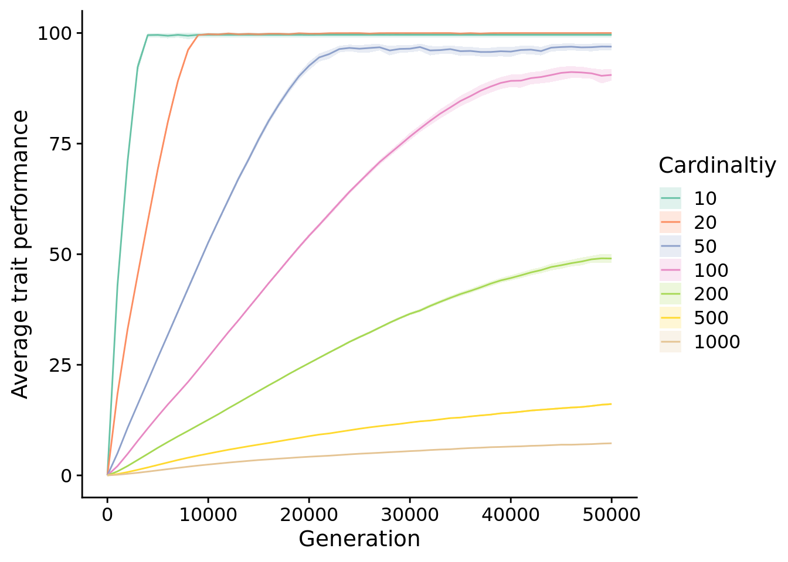
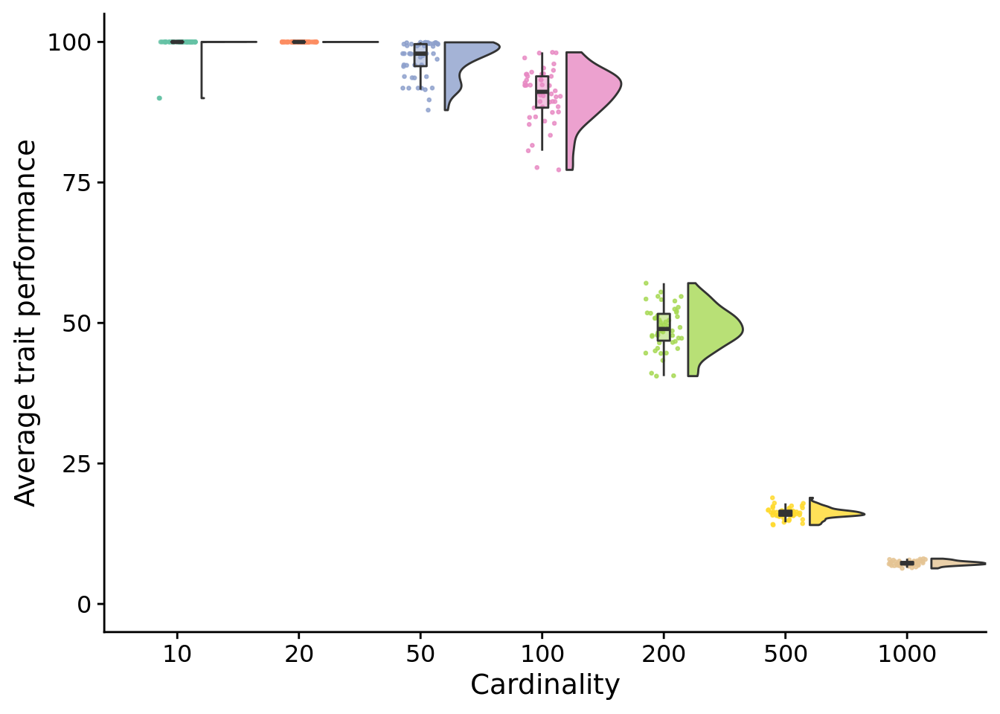
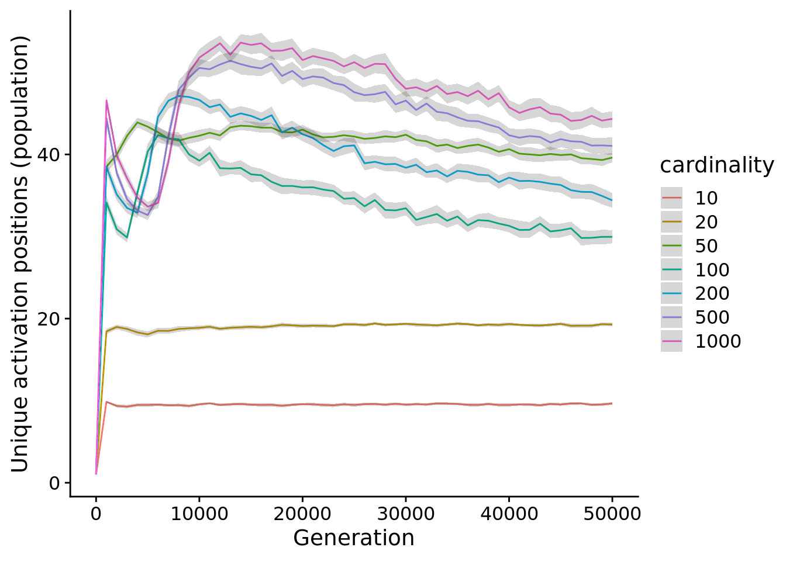
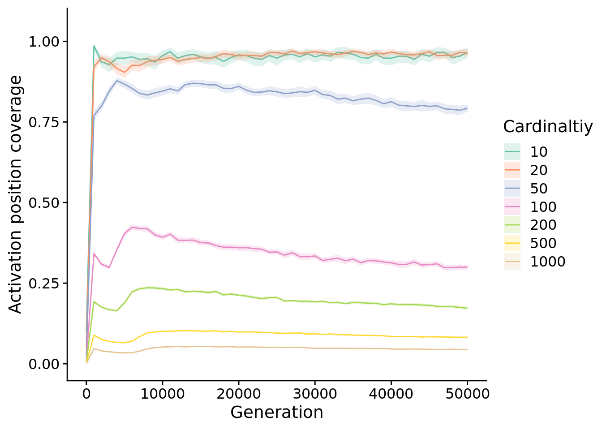
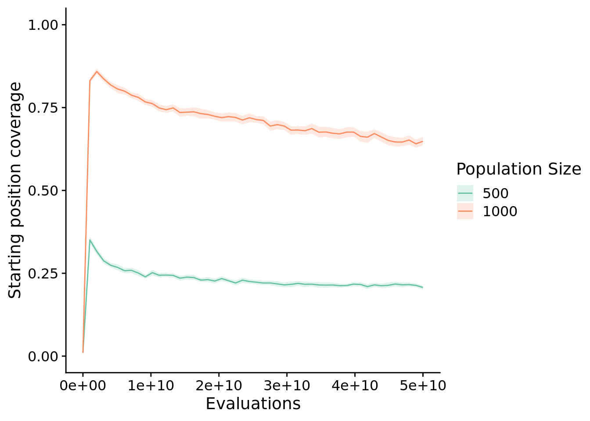

Chapter 5 Diagnostic cardinality
5.1 Overview
5.2 Analysis dependencies
library(ggplot2)
library(tidyverse)
library(knitr)
library(cowplot)
library(viridis)
library(RColorBrewer)
library(rstatix)
library(ggsignif)
library(Hmisc)
library(kableExtra)
source("https://gist.githubusercontent.com/benmarwick/2a1bb0133ff568cbe28d/raw/fb53bd97121f7f9ce947837ef1a4c65a73bffb3f/geom_flat_violin.R")These analyses were conducted in the following computing environment:
## _
## platform x86_64-pc-linux-gnu
## arch x86_64
## os linux-gnu
## system x86_64, linux-gnu
## status
## major 4
## minor 1.0
## year 2021
## month 05
## day 18
## svn rev 80317
## language R
## version.string R version 4.1.0 (2021-05-18)
## nickname Camp Pontanezen5.3 Setup
data_loc <- paste0(
working_directory,
"data/timeseries-res-1000g.csv"
)
data <- read.csv(
data_loc,
na.strings="NONE"
)
data$cardinality <- as.factor(
data$OBJECTIVE_CNT
)
data$selection_name <- as.factor(
data$selection_name
)
data$elite_trait_avg <-
data$ele_agg_per / data$OBJECTIVE_CNT
data$unique_start_positions_coverage <-
data$uni_str_pos / data$OBJECTIVE_CNT
final_data <- filter(data, gen==max(data$gen))
# Labeler for stats annotations
p_label <- function(p_value) {
threshold = 0.0001
if (p_value < threshold) {
return(paste0("p < ", threshold))
} else {
return(paste0("p = ", p_value))
}
}
# Significance threshold
alpha <- 0.05
####### misc #######
# Configure our default graphing theme
theme_set(theme_cowplot())5.4 Exploration diagnostic performance
First, we look at performance over time. Specifically, we look at the normalized aggregage score of the most performant individuals over time. To control for different cardinalities having different maximum scores, we normalized performances (by dividing by cardinality) to values between 0 and 100.
elite_trait_ave_fit <- ggplot(
data,
aes(
x=gen,
y=elite_trait_avg,
color=cardinality,
fill=cardinality
)
) +
stat_summary(geom="line", fun=mean) +
stat_summary(
geom="ribbon",
fun.data="mean_cl_boot",
fun.args=list(conf.int=0.95),
alpha=0.2,
linetype=0
) +
scale_y_continuous(
name="Average trait performance",
limits=c(0, 100)
) +
scale_x_continuous(
name="Generation"
) +
scale_fill_brewer(
name="Cardinaltiy",
palette=cb_palette
) +
scale_color_brewer(
name="Cardinaltiy",
palette=cb_palette
)
elite_trait_ave_fit
5.4.1 Final performance
Next, we look only at the final performances of each treatment
# Compute manual labels for geom_signif
stat.test <- final_data %>%
wilcox_test(elite_trait_avg ~ cardinality) %>%
adjust_pvalue(method = "bonferroni") %>%
add_significance() %>%
add_xy_position(x="cardinality",step.increase=1)
stat.test$manual_position <- stat.test$y.position * 1.05
stat.test$label <- mapply(p_label,stat.test$p.adj)elite_trait_ave_fit_final <- ggplot(
final_data,
aes(x=cardinality, y=elite_trait_avg, fill=cardinality)
) +
geom_flat_violin(
position = position_nudge(x = .2, y = 0),
alpha = .8,
scale="width"
) +
geom_point(
mapping=aes(color=cardinality),
position = position_jitter(width = .15),
size = .5,
alpha = 0.8
) +
geom_boxplot(
width = .1,
outlier.shape = NA,
alpha = 0.5
) +
scale_y_continuous(
name="Average trait performance",
limits=c(0, 100)
) +
scale_x_discrete(
name="Cardinality"
) +
scale_fill_brewer(
name="Cardinaltiy",
palette=cb_palette
) +
scale_color_brewer(
name="Cardinaltiy",
palette=cb_palette
) +
theme(
legend.position="none"
)
elite_trait_ave_fit_final
stat.test %>%
kbl() %>%
kable_styling(
bootstrap_options = c(
"striped",
"hover",
"condensed",
"responsive"
)
) %>%
scroll_box(width="600px")| .y. | group1 | group2 | n1 | n2 | statistic | p | p.adj | p.adj.signif | y.position | groups | xmin | xmax | manual_position | label |
|---|---|---|---|---|---|---|---|---|---|---|---|---|---|---|
| elite_trait_avg | 10 | 20 | 50 | 50 | 2399 | 0 | 0 | **** | 191.9440 | 10, 20 | 1 | 2 | 201.5412 | p < 1e-04 |
| elite_trait_avg | 10 | 50 | 50 | 50 | 2404 | 0 | 0 | **** | 288.4852 | 10, 50 | 1 | 3 | 302.9095 | p < 1e-04 |
| elite_trait_avg | 10 | 100 | 50 | 50 | 2438 | 0 | 0 | **** | 385.0264 | 10 , 100 | 1 | 4 | 404.2777 | p < 1e-04 |
| elite_trait_avg | 10 | 200 | 50 | 50 | 2500 | 0 | 0 | **** | 481.5676 | 10 , 200 | 1 | 5 | 505.6460 | p < 1e-04 |
| elite_trait_avg | 10 | 500 | 50 | 50 | 2500 | 0 | 0 | **** | 578.1088 | 10 , 500 | 1 | 6 | 607.0142 | p < 1e-04 |
| elite_trait_avg | 10 | 1000 | 50 | 50 | 2500 | 0 | 0 | **** | 674.6500 | 10 , 1000 | 1 | 7 | 708.3825 | p < 1e-04 |
| elite_trait_avg | 20 | 50 | 50 | 50 | 2500 | 0 | 0 | **** | 771.1912 | 20, 50 | 2 | 3 | 809.7508 | p < 1e-04 |
| elite_trait_avg | 20 | 100 | 50 | 50 | 2500 | 0 | 0 | **** | 867.7324 | 20 , 100 | 2 | 4 | 911.1190 | p < 1e-04 |
| elite_trait_avg | 20 | 200 | 50 | 50 | 2500 | 0 | 0 | **** | 964.2736 | 20 , 200 | 2 | 5 | 1012.4873 | p < 1e-04 |
| elite_trait_avg | 20 | 500 | 50 | 50 | 2500 | 0 | 0 | **** | 1060.8148 | 20 , 500 | 2 | 6 | 1113.8555 | p < 1e-04 |
| elite_trait_avg | 20 | 1000 | 50 | 50 | 2500 | 0 | 0 | **** | 1157.3560 | 20 , 1000 | 2 | 7 | 1215.2238 | p < 1e-04 |
| elite_trait_avg | 50 | 100 | 50 | 50 | 2166 | 0 | 0 | **** | 1253.8972 | 50 , 100 | 3 | 4 | 1316.5921 | p < 1e-04 |
| elite_trait_avg | 50 | 200 | 50 | 50 | 2500 | 0 | 0 | **** | 1350.4384 | 50 , 200 | 3 | 5 | 1417.9603 | p < 1e-04 |
| elite_trait_avg | 50 | 500 | 50 | 50 | 2500 | 0 | 0 | **** | 1446.9796 | 50 , 500 | 3 | 6 | 1519.3286 | p < 1e-04 |
| elite_trait_avg | 50 | 1000 | 50 | 50 | 2500 | 0 | 0 | **** | 1543.5208 | 50 , 1000 | 3 | 7 | 1620.6968 | p < 1e-04 |
| elite_trait_avg | 100 | 200 | 50 | 50 | 2500 | 0 | 0 | **** | 1640.0620 | 100, 200 | 4 | 5 | 1722.0651 | p < 1e-04 |
| elite_trait_avg | 100 | 500 | 50 | 50 | 2500 | 0 | 0 | **** | 1736.6032 | 100, 500 | 4 | 6 | 1823.4334 | p < 1e-04 |
| elite_trait_avg | 100 | 1000 | 50 | 50 | 2500 | 0 | 0 | **** | 1833.1444 | 100 , 1000 | 4 | 7 | 1924.8016 | p < 1e-04 |
| elite_trait_avg | 200 | 500 | 50 | 50 | 2500 | 0 | 0 | **** | 1929.6856 | 200, 500 | 5 | 6 | 2026.1699 | p < 1e-04 |
| elite_trait_avg | 200 | 1000 | 50 | 50 | 2500 | 0 | 0 | **** | 2026.2268 | 200 , 1000 | 5 | 7 | 2127.5381 | p < 1e-04 |
| elite_trait_avg | 500 | 1000 | 50 | 50 | 2500 | 0 | 0 | **** | 2122.7680 | 500 , 1000 | 6 | 7 | 2228.9064 | p < 1e-04 |
5.5 Activation position coverage
Next, we analyze the number of unique starting position maintained by populations.
ggplot(data, aes(x=gen, y=uni_str_pos, color=cardinality)) +
stat_summary(geom="line", fun=mean) +
stat_summary(
geom="ribbon",
fun.data="mean_cl_boot",
fun.args=list(conf.int=0.95),
alpha=0.2,
linetype=0
) +
scale_y_continuous(
name="Unique activation positions (population)",
) +
scale_x_continuous(
name="Generation"
)
Different cardinalities have numbers of possible starting positions, so next, we look at the proportion of starting positions (out of all possible) maintained by populations.
unique_start_positions_coverage_fig <- ggplot(
data,
aes(
x=gen,
y=unique_start_positions_coverage,
color=cardinality,
fill=cardinality
)
) +
stat_summary(geom="line", fun=mean) +
stat_summary(
geom="ribbon",
fun.data="mean_cl_boot",
fun.args=list(conf.int=0.95),
alpha=0.2,
linetype=0
) +
scale_y_continuous(
name="Activation position coverage",
limits=c(0.0, 1.05)
) +
scale_x_continuous(
name="Generation"
) +
scale_fill_brewer(
name="Cardinaltiy",
palette=cb_palette
) +
scale_color_brewer(
name="Cardinaltiy",
palette=cb_palette
)
unique_start_positions_coverage_fig
5.5.1 Final activation position coverage
# Compute manual labels for geom_signif
stat.test <- final_data %>%
wilcox_test(unique_start_positions_coverage ~ cardinality) %>%
adjust_pvalue(method = "bonferroni") %>%
add_significance() %>%
add_xy_position(x="cardinality",step.increase=1)
stat.test$manual_position <- stat.test$y.position * 1.05
stat.test$label <- mapply(p_label,stat.test$p.adj)final_unique_start_positions_coverage_fig <- ggplot(
final_data,
aes(
x=cardinality,
y=unique_start_positions_coverage,
fill=cardinality
)
) +
geom_flat_violin(
position = position_nudge(x = .2, y = 0),
alpha = .8,
scale="width"
) +
geom_point(
mapping=aes(color=cardinality),
position = position_jitter(width = .15),
size = .5,
alpha = 0.8
) +
geom_boxplot(
width = .1,
outlier.shape = NA,
alpha = 0.5
) +
scale_y_continuous(
name="Activation position coverage",
limits=c(0, 1.05)
) +
scale_x_discrete(
name="Cardinality"
) +
scale_fill_brewer(
name="Cardinaltiy",
palette=cb_palette
) +
scale_color_brewer(
name="Cardinaltiy",
palette=cb_palette
) +
theme(
legend.position="none"
)
final_unique_start_positions_coverage_fig
stat.test %>%
kbl() %>%
kable_styling(
bootstrap_options = c(
"striped",
"hover",
"condensed",
"responsive"
)
) %>%
scroll_box(width="600px")| .y. | group1 | group2 | n1 | n2 | statistic | p | p.adj | p.adj.signif | y.position | groups | xmin | xmax | manual_position | label |
|---|---|---|---|---|---|---|---|---|---|---|---|---|---|---|
| unique_start_positions_coverage | 10 | 20 | 50 | 50 | 1448 | 0.126 | 1 | ns | 1.94900 | 10, 20 | 1 | 2 | 2.046450 | p = 1 |
| unique_start_positions_coverage | 10 | 50 | 50 | 50 | 2424 | 0.000 | 0 | **** | 2.94545 | 10, 50 | 1 | 3 | 3.092722 | p < 1e-04 |
| unique_start_positions_coverage | 10 | 100 | 50 | 50 | 2500 | 0.000 | 0 | **** | 3.94190 | 10 , 100 | 1 | 4 | 4.138995 | p < 1e-04 |
| unique_start_positions_coverage | 10 | 200 | 50 | 50 | 2500 | 0.000 | 0 | **** | 4.93835 | 10 , 200 | 1 | 5 | 5.185268 | p < 1e-04 |
| unique_start_positions_coverage | 10 | 500 | 50 | 50 | 2500 | 0.000 | 0 | **** | 5.93480 | 10 , 500 | 1 | 6 | 6.231540 | p < 1e-04 |
| unique_start_positions_coverage | 10 | 1000 | 50 | 50 | 2500 | 0.000 | 0 | **** | 6.93125 | 10 , 1000 | 1 | 7 | 7.277812 | p < 1e-04 |
| unique_start_positions_coverage | 20 | 50 | 50 | 50 | 2492 | 0.000 | 0 | **** | 7.92770 | 20, 50 | 2 | 3 | 8.324085 | p < 1e-04 |
| unique_start_positions_coverage | 20 | 100 | 50 | 50 | 2500 | 0.000 | 0 | **** | 8.92415 | 20 , 100 | 2 | 4 | 9.370358 | p < 1e-04 |
| unique_start_positions_coverage | 20 | 200 | 50 | 50 | 2500 | 0.000 | 0 | **** | 9.92060 | 20 , 200 | 2 | 5 | 10.416630 | p < 1e-04 |
| unique_start_positions_coverage | 20 | 500 | 50 | 50 | 2500 | 0.000 | 0 | **** | 10.91705 | 20 , 500 | 2 | 6 | 11.462903 | p < 1e-04 |
| unique_start_positions_coverage | 20 | 1000 | 50 | 50 | 2500 | 0.000 | 0 | **** | 11.91350 | 20 , 1000 | 2 | 7 | 12.509175 | p < 1e-04 |
| unique_start_positions_coverage | 50 | 100 | 50 | 50 | 2500 | 0.000 | 0 | **** | 12.90995 | 50 , 100 | 3 | 4 | 13.555447 | p < 1e-04 |
| unique_start_positions_coverage | 50 | 200 | 50 | 50 | 2500 | 0.000 | 0 | **** | 13.90640 | 50 , 200 | 3 | 5 | 14.601720 | p < 1e-04 |
| unique_start_positions_coverage | 50 | 500 | 50 | 50 | 2500 | 0.000 | 0 | **** | 14.90285 | 50 , 500 | 3 | 6 | 15.647993 | p < 1e-04 |
| unique_start_positions_coverage | 50 | 1000 | 50 | 50 | 2500 | 0.000 | 0 | **** | 15.89930 | 50 , 1000 | 3 | 7 | 16.694265 | p < 1e-04 |
| unique_start_positions_coverage | 100 | 200 | 50 | 50 | 2500 | 0.000 | 0 | **** | 16.89575 | 100, 200 | 4 | 5 | 17.740537 | p < 1e-04 |
| unique_start_positions_coverage | 100 | 500 | 50 | 50 | 2500 | 0.000 | 0 | **** | 17.89220 | 100, 500 | 4 | 6 | 18.786810 | p < 1e-04 |
| unique_start_positions_coverage | 100 | 1000 | 50 | 50 | 2500 | 0.000 | 0 | **** | 18.88865 | 100 , 1000 | 4 | 7 | 19.833082 | p < 1e-04 |
| unique_start_positions_coverage | 200 | 500 | 50 | 50 | 2500 | 0.000 | 0 | **** | 19.88510 | 200, 500 | 5 | 6 | 20.879355 | p < 1e-04 |
| unique_start_positions_coverage | 200 | 1000 | 50 | 50 | 2500 | 0.000 | 0 | **** | 20.88155 | 200 , 1000 | 5 | 7 | 21.925628 | p < 1e-04 |
| unique_start_positions_coverage | 500 | 1000 | 50 | 50 | 2500 | 0.000 | 0 | **** | 21.87800 | 500 , 1000 | 6 | 7 | 22.971900 | p < 1e-04 |
5.6 Does activation position coverage predict performance?
ggplot(
final_data,
aes(
x=unique_start_positions_coverage,
y=elite_trait_avg,
color=cardinality
)
) +
geom_point() +
scale_color_brewer(
name="Cardinaltiy",
palette=cb_palette
)
cor.test(
x=final_data$unique_start_positions_coverage,
y=final_data$elite_trait_avg,
method="spearman",
exact=FALSE
)##
## Spearman's rank correlation rho
##
## data: final_data$unique_start_positions_coverage and final_data$elite_trait_avg
## S = 262488, p-value < 2.2e-16
## alternative hypothesis: true rho is not equal to 0
## sample estimates:
## rho
## 0.96326685.7 Manuscript figures
Combine figures for the manuscript.
legend <- cowplot::get_legend(
elite_trait_ave_fit +
guides(
color=guide_legend(nrow=1),
fill=guide_legend(nrow=1)
) +
theme(
legend.position = "bottom",
legend.box="horizontal",
legend.justification="center"
)
)
grid <- plot_grid(
elite_trait_ave_fit +
ggtitle("Performance over time") +
theme(legend.position="none"),
elite_trait_ave_fit_final +
ggtitle("Final performance") +
theme(),
unique_start_positions_coverage_fig +
ggtitle("Activation position coverage over time") +
theme(legend.position="none"),
final_unique_start_positions_coverage_fig +
ggtitle("Final activation position coverage") +
theme(),
nrow=2,
ncol=2,
rel_widths=c(3,2),
labels="auto"
)
grid <- plot_grid(
grid,
legend,
nrow=2,
ncol=1,
rel_heights=c(1, 0.1)
)
save_plot(
paste(working_directory, "imgs/cardinality-panel.pdf", sep=""),
grid,
base_width=12,
base_height=8
)
grid